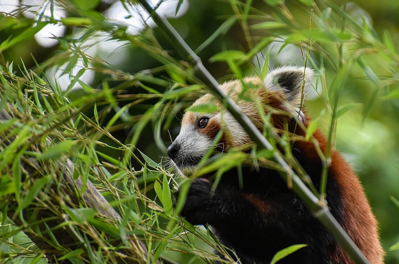
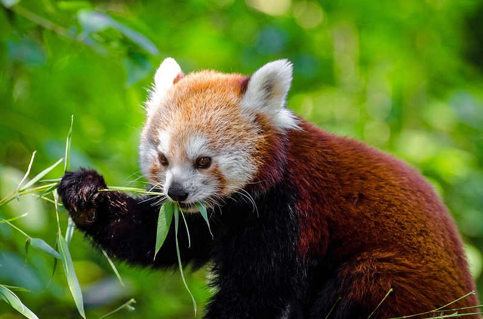
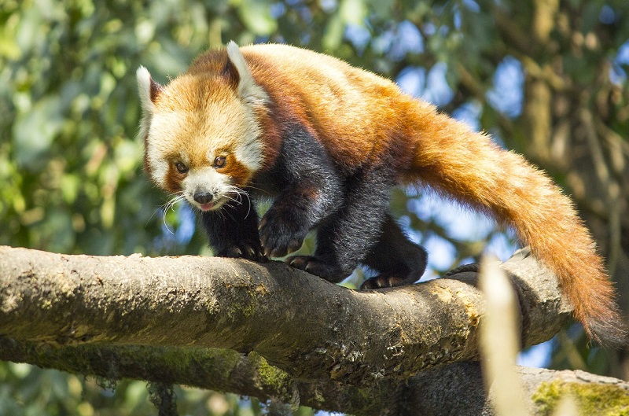
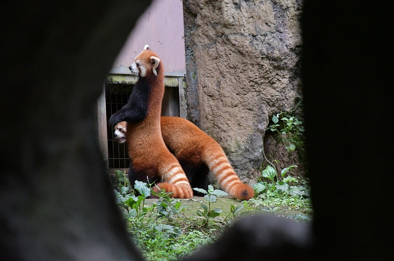

Красные панды - это всеядные животные, которые питаются различными растительными и животными продуктами, хотя и предпочитают бамбук.

Бамбук - это основной источник питания красных панд. Они питаются различными видами бамбука, которые растут в горных лесах. Бамбук содержит много клетчатки и низкое количество питательных веществ, поэтому красные панды должны потреблять большое количество бамбука, чтобы получить достаточное количество питательных веществ.

Красные панды также питаются различными фруктами и ягодами, которые растут в горных лесах. Они предпочитают фрукты, такие как яблоки, груши, виноград и др., а также ягоды.

Жителям зоопарков дают фрукты, иногда овощи, даже печенья, но не обычные. Их делают специально для маленьких обитателей, используя волокно бамбука.